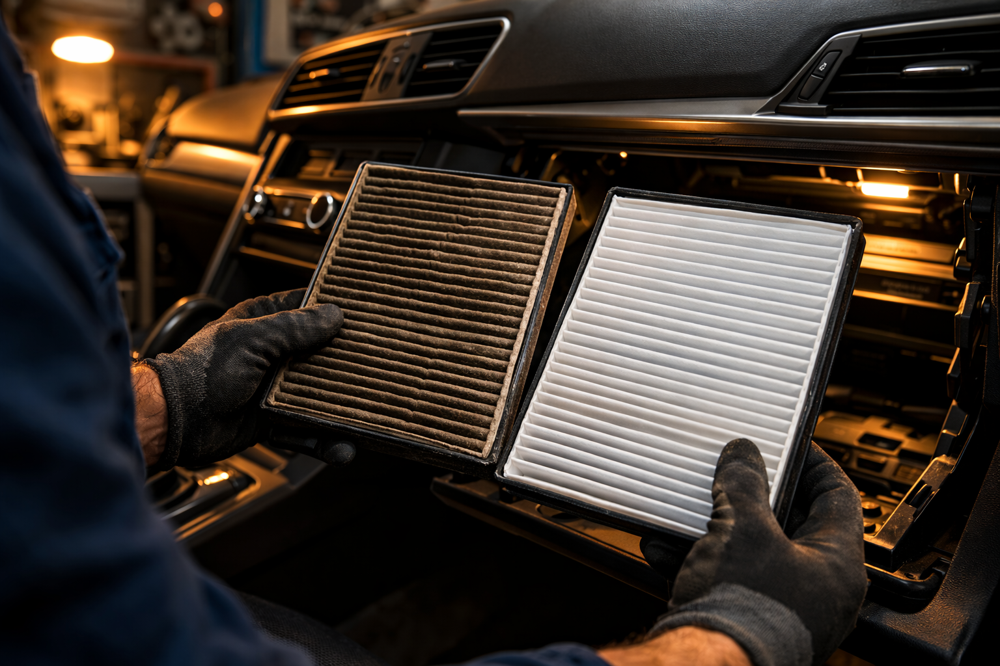
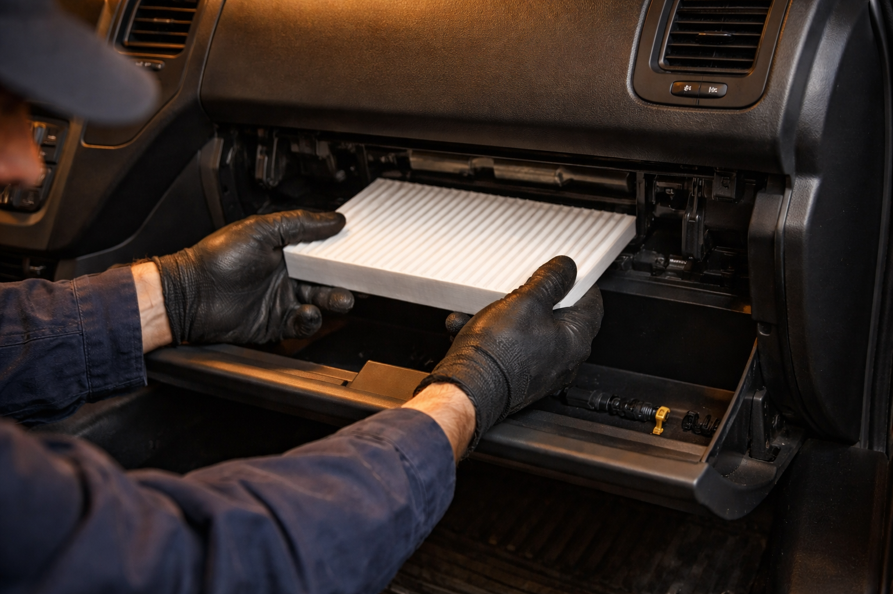

Remplacement de filtre d'air d'habitacle pour un air sain dans votre véhicule. Service rapide et accessible chez Ali-Ka.

Vous passez en moyenne 45 minutes par jour dans votre voiture. L'air que vous y respirez traverse un filtre. Quand l'avez-vous changé pour la dernière fois ? En milieu urbain comme Bruxelles, où les particules fines et les gaz d'échappement saturent l'air extérieur, ce petit filtre est tout ce qui sépare vos poumons de la pollution. Selon Bruxelles Environnement, la qualité de l'air dans l'habitacle peut être jusqu'à cinq fois plus polluée qu'à l'extérieur, surtout dans les embouteillages. Un filtre habitacle en bon état retient les pollens, la poussière, les microparticules et les odeurs avant qu'ils n'atteignent l'intérieur de votre véhicule. C'est un geste de santé autant que d'entretien.
Chez Ali-Ka, Avenue des Casernes 10 à Etterbeek, nous remplaçons votre filtre habitacle rapidement et à un tarif accessible. Imaginez : les vitres fermées, la ventilation en marche, et un air plus pur que celui de la rue. Que vous traversiez les rues d'Etterbeek, rouliez sur l'Avenue de Tervueren vers Woluwe-Saint-Lambert ou restiez coincé dans les embouteillages du quartier européen, votre habitacle redevient un espace où il fait bon respirer.
Un filtre encrassé, c'est un habitacle qui se dégrade en silence. Les signes sont subtils au début, puis de plus en plus perceptibles :
Nous recommandons un remplacement tous les 15 000 à 20 000 km ou au moins une fois par an. Bruxelles figure parmi les capitales européennes les plus touchées par la pollution atmosphérique, ce qui accélère l'encrassement du filtre. Si vous souffrez d'allergies saisonnières, pensez à changer votre filtre au printemps, juste avant l'arrivée des pollens de bouleau et de graminées qui envahissent la région bruxelloise dès le mois d'avril. Vos yeux et vos voies respiratoires vous remercieront dès les premiers kilomètres.
Deux options, deux niveaux de confort. Le filtre standard fait bien son travail : il capture les particules, les poussières et les pollens. Pour la plupart des conducteurs, c'est suffisant. Mais si vous roulez quotidiennement dans la circulation dense de Bruxelles — à Etterbeek, Ixelles, Schaerbeek ou sur les grandes artères encombrées — le filtre à charbon actif change la donne. Il absorbe aussi les gaz et les mauvaises odeurs. L'air intérieur devient sensiblement plus agréable, plus neutre. Chez Ali-Ka, on vous conseille le filtre le mieux adapté à votre trajet et à votre sensibilité.
Profitez de votre passage pour combiner le remplacement du filtre habitacle avec une vidange, un contrôle de batterie ou une vérification de l'éclairage automobile. Un seul rendez-vous, un entretien complet. Notre atelier, situé à proximité du Parc du Cinquantenaire et de la Gare d'Etterbeek, est facilement accessible depuis Auderghem, Woluwe-Saint-Pierre et toute la région bruxelloise.
Tous les 15 000 à 20 000 km ou une fois par an. En milieu urbain bruxellois, un remplacement plus fréquent est conseillé à cause de la pollution.
Oui, un filtre encrassé réduit le débit d'air et l'efficacité de la climatisation. Il peut aussi provoquer des odeurs. Le remplacement est souvent combiné avec l'entretien de la clim.
C'est une intervention peu coûteuse. Le prix dépend du modèle de votre véhicule. Appelez le 02 647 47 01 pour un tarif précis.
Le charbon actif filtre aussi les gaz et odeurs, idéal en ville. Le filtre standard retient particules et pollens. Ali-Ka vous conseille selon votre usage.
Oui, un filtre habitacle à charbon actif retient les particules fines, le pollen et les gaz d'échappement. En conduite urbaine à Bruxelles, où la qualité de l'air est un enjeu majeur, un filtre en bon état est essentiel. Ali-Ka recommande un remplacement tous les 15 000 km ou une fois par an.